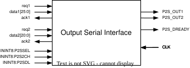

9.5. Output Serial Interface
The output serial interface enables the readout of the state of Speck2e through a custom serial protocol. In this section, the operation and configuration of the output interface is described.
For the output data encoding, refer to section output-interface-encoding.
9.5.1. Block Diagram
The following block diagram shows the output interface, including the two internal inputs data1 and data2. Input data1 receives asynchronous messages from all the active Monitor buses across the chip. Input data2 receives messages from the Readout Layer.


Output Serial Interface
9.5.2. Register Settings
9.5.2.1. Input bus selection
Register bits ININT8:P2SSEL select the input bus (data1 or data2) that will be forwarded to the chip output.
Action |
|
0 (default) |
data1 active (Monitor Bus) |
1 |
data2 active (Readout Layer) |
9.5.3. Double speed output
The output serializer provides two data pins OUT1 and OUT2. In normal operation, only pin OUT1 is enabled. Register ININT8:P2S2CH can be set to ‘1’ to enable both output serial data pins. In this configuration, two messages can be read out from the chip in parallel, i.e., OUT1 will output 26 bits of message 1 and OUT2 will output at the same time, and with the same timing, message 2.
Note
The dual output mode is not available when data2, i.e. readout layer data output is enabled. If the dual output mode is enabled while data2 output is enabled, pin OUT2 will be set to ‘0’.
Action |
|
0 (default) |
Single output pin enabled (OUT1) |
1 |
Dual parallel output pins (OUT1/2) |
9.5.4. Reduced output word length
The output serializer can be configured to send only the LSB 17 bits to the output pins OUT1 (and OUT2 when enabled). The configuration is via register bit ININT8:P2SDL.
Action |
|
0 (default) |
26-bit output word length |
1 |
17-bit output word length |
9.5.5. Timing Diagrams
Note
The data at the output serial interface is valid at the falling “edge” of the clock.
The timing diagram for the communication is as follows.
Note
When the data2 parallel input is selected via the register ININT8:P2SSEL, the operation is the same as for data1 input. Bits <25:21> are filled with ‘1’ in this case.